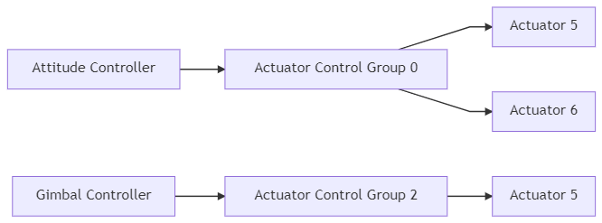
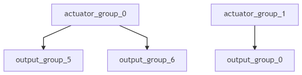

Mixing and Actuators
The PX4 architecture ensures that the airframe layout does not require special case handling in the core controllers.
Mixing means to take force commands (e.g. turn right) and translate them to actuator commands which control motors or servos.
For a plane with one servo per aileron this means to command one of them high and the other low.
The same applies for multicopters: Pitching forward requires changing the speed of all motors.
Separating the mixer logic from the actual attitude controller greatly improves reusability.
Control Pipeline
A particular controller sends a particular normalized force or torque demand (scaled from -1..+1) to the mixer, which then sets individual actuators accordingly. The output driver (e.g. UART, UAVCAN or PWM) then scales it to the actuators native units, e.g. a PWM value of 1300.

Control Groups
PX4 uses control groups (inputs) and output groups.
Conceptually they are very simple: A control group is e.g. attitude, for the core flight controls, or gimbal for payload.
An output group is one physical bus, e.g. the first 8 PWM outputs for servos.
Each of these groups has 8 normalized (-1..+1) command ports, which can be mapped and scaled through the mixer.
A mixer defines how each of these 8 signals of the controls are connected to the 8 outputs.
For a simple plane control 0 (roll) is connected straight to output 0 (aileron). For a multicopter things are a bit different: control 0 (roll) is connected to all four motors and combined with throttle.
Control Group #0 (Flight Control)
- 0: roll (-1..1)
- 1: pitch (-1..1)
- 2: yaw (-1..1)
- 3: throttle (0..1 normal range, -1..1 for variable pitch / thrust reversers)
- 4: flaps (-1..1)
- 5: spoilers (-1..1)
- 6: airbrakes (-1..1)
- 7: landing gear (-1..1)
Control Group #1 (Flight Control VTOL/Alternate)
- 0: roll ALT (-1..1)
- 1: pitch ALT (-1..1)
- 2: yaw ALT (-1..1)
- 3: throttle ALT (0..1 normal range, -1..1 for variable pitch / thrust reversers)
- 4: reserved / aux0
- 5: reserved / aux1
- 6: reserved / aux2
- 7: reserved / aux3
Control Group #2 (Gimbal)
- 0: gimbal roll
- 1: gimbal pitch
- 2: gimbal yaw
- 3: gimbal shutter
- 4: camera zoom
- 5: reserved
- 6: reserved
- 7: reserved (parachute, -1..1)
Control Group #3 (Manual Passthrough)
- 0: RC roll
- 1: RC pitch
- 2: RC yaw
- 3: RC throttle
- 4: RC mode switch (Passthrough of RC channel mapped by RC_MAP_FLAPS)
- 5: RC aux1 (Passthrough of RC channel mapped by RC_MAP_AUX1)
- 6: RC aux2 (Passthrough of RC channel mapped by RC_MAP_AUX2)
- 7: RC aux3 (Passthrough of RC channel mapped by RC_MAP_AUX3)
This group is only used to define mapping of RC inputs to specific outputs during normal operation (see quad_x.main.mix for an example of AUX2 being scaled in a mixer). In the event of manual IO failsafe override (if the PX4FMU stops communicating with the PX4IO board) only the mapping/mixing defined by control group 0 inputs for roll, pitch, yaw and throttle are used (other mappings are ignored).
Control Group #6 (First Payload)
- 0: function 0
- 1: function 1
- 2: function 2
- 3: function 3
- 4: function 4
- 5: function 5
- 6: function 6
- 7: function 7
Virtual Control Groups
Virtual Control Groups are only relevant to developers creating VTOL code. They should not be used in mixers, and are provided only for "completeness".
These groups are NOT mixer inputs, but serve as meta-channels to feed fixed wing and multicopter controller outputs into the VTOL governor module.
Control Group #4 (Flight Control MC VIRTUAL)
- 0: roll ALT (-1..1)
- 1: pitch ALT (-1..1)
- 2: yaw ALT (-1..1)
- 3: throttle ALT (0..1 normal range, -1..1 for variable pitch / thrust reversers)
- 4: reserved / aux0
- 5: reserved / aux1
- 6: reserved / aux2
- 7: reserved / aux3
Control Group #5 (Flight Control FW VIRTUAL)
- 0: roll ALT (-1..1)
- 1: pitch ALT (-1..1)
- 2: yaw ALT (-1..1)
- 3: throttle ALT (0..1 normal range, -1..1 for variable pitch / thrust reversers)
- 4: reserved / aux0
- 5: reserved / aux1
- 6: reserved / aux2
- 7: reserved / aux3
Output Groups/Mapping
An output group is one physical bus (e.g. FMU PWM outputs, IO PWM outputs, UAVCAN etc.) that has N (usually 8) normalized (-1..+1) command ports that can be mapped and scaled through the mixer.
The mixer file does not explicitly define the actual output group (physical bus) where the outputs are applied. Instead, the purpose of the mixer (e.g. to control MAIN or AUX outputs) is inferred from the mixer filename, and mapped to the appropriate physical bus in the system startup scripts (and in particular in rc.interface).
This approach is needed because the physical bus used for MAIN outputs is not always the same; it depends on whether or not the flight controller has an IO Board (see PX4 Reference Flight Controller Design > Main/IO Function Breakdown) or uses UAVCAN for motor control. The startup scripts load the mixer files into the appropriate device driver for the board, using the abstraction of a "device". The main mixer is loaded into device
/dev/uavcan/esc(uavcan) if UAVCAN is enabled, and otherwise/dev/pwm_output0(this device is mapped to the IO driver on controllers with an I/O board, and the FMU driver on boards that don't). The aux mixer file is loaded into device/dev/pwm_output1, which maps to the FMU driver on Pixhawk controllers that have an I/O board.
Since there are multiple control groups (like flight controls, payload, etc.) and multiple output groups (busses), one control group can send commands to multiple output groups.

In practice, the startup scripts only load mixers into a single device (output group). This is a configuration rather than technical limitation; you could load the main mixer into multiple drivers and have, for example, the same signal on both UAVCAN and the main pins.
PX4 Mixer Definitions
Mixers are defined in plain-text files using the syntax below.
Files for pre-defined airframes can be found in ROMFS/px4fmu_common/mixers. These can be used as a basis for customisation, or for general testing purposes.
Mixer File Names
A mixer file must be named XXXX.main.mix if it is responsible for the mixing of MAIN outputs or XXXX.aux.mix if it mixes AUX outputs.
Mixer Loading
The default set of mixer files (in Firmware) are defined in px4fmu_common/init.d/airframes/. These can be overridden by mixer files with the same name in the SD card directory /etc/mixers/ (SD card mixer files are loaded by preference).
PX4 loads mixer files named XXXX.main.mix onto the MAIN outputs and YYYY.aux.mix onto the AUX outputs, where the prefixes depend on the airframe and airframe configuration. Commonly the MAIN and AUX outputs correspond to MAIN and AUX PWM outputs, but these may be loaded into a UAVCAN (or other) bus when that is enabled.
The MAIN mixer filename (prefix XXXX) is set in the airframe configuration using set MIXER XXXX (e.g. airframes/10015_tbs_discovery calls set MIXER quad_w to load the main mixer file quadw._main.mix).
The AUX mixer filename (prefix YYYY above) depends on airframe settings and/or defaults:
MIXER_AUXcan be used to explicitly set which AUX file is loaded (e.g. in the aiframe configuration,set MIXER_AUX vtol_AAERTwill loadvtol_AAERT.aux.mix).- Multicopter and Fixed-Wing airframes load pass.aux.mix by default (i.e if not set using
MIXER_AUX).pass.aux.mixis the RC passthrough mixer, which passes the values of 4 user-defined RC channels (set using the RC_MAP_AUXx/RC_MAP_FLAPS parameters) to the first four outputs on the AUX output. - VTOL frames load the AUX file specified using
MIXER_AUXif set, or the value specified byMIXERif not. - Frames with gimbal control enabled (and output mode set to AUX) will override the airframe-specific MIXER_AUX setting and load
mount.aux.mixon the AUX outputs.
Mixer file loading is implemented in ROMFS/px4fmu_common/init.d/rc.interface.
Loading a Custom Mixer
PX4 loads appropriately named mixer files from the SD card directory /etc/mixers/, by preference, and then the version in Firmware.
To load a custom mixer, you should give it the same name as a "normal" mixer file (that is going to be loaded by your airframe) and put it in the etc/mixers directory on your flight controller's SD card.
Most commonly you will override/replace the AUX mixer file for your current airframe (which may be the RC passthrough mixer - pass.aux.mix). See above for more information on mixer loading.
You can also manually load a mixer at runtime using the mixer load command (thereby avoiding the need for a reboot). For example, to load a mixer /etc/mixers/test_mixer.mix onto the MAIN PWM outputs, you could enter the following command in a console:
mixer load /dev/pwm_output0 /fs/microsd/etc/mixers/test_mixer.mix
Syntax
Mixer files are text files that define one or more mixer definitions: mappings between one or more inputs and one or more outputs.
There are four types of mixers definitions: multirotor mixer, helicopter mixer, summing mixer, and null mixer.
- Multirotor mixer - Defines outputs for 4, 6, or 8 rotor vehicles with + or X geometry.
- Helicopter mixer - Defines outputs for helicopter swash-plate servos and main motor ESCs (the tail-rotor is a separate summing mixer.)
- Summing mixer - Combines zero or more control inputs into a single actuator output. Inputs are scaled, and the mixing function sums the result before applying an output scaler.
- Null mixer - Generates a single actuator output that has zero output (when not in failsafe mode).
Use multirotor and helicopter mixers for the respective types, the summing mixer for servos and actuator controls, and the null mixer for creating outputs that must be zero during normal use (e.g. a parachute has 0 normally, but might have a particular value during failsafe).
The number of outputs generated by each mixer depends on the mixer type and configuration. For example, the multirotor mixer generates 4, 6, or 8 outputs depending on the geometry, while a summing mixer or null mixer generate just one output.
You can specify more than one mixer in each file. The output order (allocation of mixers to actuators) is specific to the device reading the mixer definition; for a PWM device the output order matches the order of declaration. For example, if you define a multi-rotor mixer for a quad geometry, followed by a null mixer, followed by two summing mixers then this would allocate the first 4 outputs to the quad, an "empty" output, and the next two outputs.
Each mixer definition begin with a line of the form:
<tag>: <mixer arguments>
The tag selects the mixer type (see links for detail on each type):
R: Multirotor mixerH: Helicopter mixerM: Summing mixerZ: Null mixer
Some mixers definitions consist of a number of tags (e.g. O and S) that follow the mixer-type tag above.
Any line that does not begin with a single capital letter followed by a colon may be ignored (so explanatory text can be freely mixed with the definitions).
Summing Mixer
Summing mixers are used for actuator and servo control.
A summing (simple) mixer combines zero or more control inputs into a single actuator output. Inputs are scaled, and the mixing function sums the result before applying an output scaler.
A simple mixer definition begins with:
M: <control count>
O: <-ve scale> <+ve scale> <offset> <lower limit> <upper limit>
If <control count> is zero, the sum is effectively zero and the mixer will output a fixed value that is <offset> constrained by <lower limit> and <upper limit>.
The second line defines the output scaler with scaler parameters as discussed above. Whilst the calculations are performed as floating-point operations, the values stored in the definition file are scaled by a factor of 10000; i.e. an offset of -0.5 is encoded as -5000.
The definition continues with <control count> entries describing the control
inputs and their scaling, in the form:
S: <group> <index> <-ve scale> <+ve scale> <offset> <lower limit> <upper limit>
The
S:lines must be below theO:line.
The <group> value identifies the control group from which the scaler will read, and the <index> value an offset within that group.
These values are specific to the device reading the mixer definition.
When used to mix vehicle controls, mixer group zero is the vehicle attitude control group, and index values zero through three are normally roll, pitch, yaw and thrust respectively.
The remaining fields on the line configure the control scaler with parameters as discussed above. Whilst the calculations are performed as floating-point operations, the values stored in the definition file are scaled by a factor of 10000; i.e. an offset of -0.5 is encoded as -5000.
An example of a typical mixer file is explained here.
Null Mixer
A null mixer consumes no controls and generates a single actuator output with a value that is always zero.
Typically a null mixer is used as a placeholder in a collection of mixers in order to achieve a specific pattern of actuator outputs. It may also be used to control the value of an output used for a failsafe device (the output is 0 in normal use; during failsafe the mixer is ignored and a failsafe value is used instead).
The null mixer definition has the form:
Z:
Multirotor Mixer
The multirotor mixer combines four control inputs (roll, pitch, yaw, thrust) into a set of actuator outputs intended to drive motor speed controllers.
The mixer definition is a single line of the form:
R: <geometry> <roll scale> <pitch scale> <yaw scale> <idlespeed>
The supported geometries include:
- 4x - quadrotor in X configuration
- 4+ - quadrotor in + configuration
- 6x - hexacopter in X configuration
- 6+ - hexacopter in + configuration
- 8x - octocopter in X configuration
- 8+ - octocopter in + configuration
Each of the roll, pitch and yaw scale values determine scaling of the roll, pitch and yaw controls relative to the thrust control. Whilst the calculations are performed as floating-point operations, the values stored in the definition file are scaled by a factor of 10000; i.e. an factor of 0.5 is encoded as 5000.
Roll, pitch and yaw inputs are expected to range from -1.0 to 1.0, whilst the thrust input ranges from 0.0 to 1.0. Output for each actuator is in the range -1.0 to 1.0.
Idlespeed can range from 0.0 to 1.0. Idlespeed is relative to the maximum speed of motors and it is the speed at which the motors are commanded to rotate when all control inputs are zero.
In the case where an actuator saturates, all actuator values are rescaled so that the saturating actuator is limited to 1.0.
Helicopter Mixer
The helicopter mixer combines three control inputs (roll, pitch, thrust) into four outputs (swash-plate servos and main motor ESC setting). The first output of the helicopter mixer is the throttle setting for the main motor. The subsequent outputs are the swash-plate servos. The tail-rotor can be controlled by adding a simple mixer.
The thrust control input is used for both the main motor setting as well as the collective pitch for the swash-plate. It uses a throttle-curve and a pitch-curve, both consisting of five points.
The throttle- and pitch- curves map the "thrust" stick input position to a throttle value and a pitch value (separately). This allows the flight characteristics to be tuned for different types of flying. An explanation of how curves might be tuned can be found in this guide (search on Programmable Throttle Curves and Programmable Pitch Curves).
The mixer definition begins with:
H: <number of swash-plate servos, either 3 or 4>
T: <throttle setting at thrust: 0%> <25%> <50%> <75%> <100%>
P: <collective pitch at thrust: 0%> <25%> <50%> <75%> <100%>
T: defines the points for the throttle-curve.
P: defines the points for the pitch-curve.
Both curves contain five points in the range between 0 and 10000.
For simple linear behavior, the five values for a curve should be 0 2500 5000 7500 10000.
This is followed by lines for each of the swash-plate servos (either 3 or 4) in the following form:
S: <angle> <arm length> <scale> <offset> <lower limit> <upper limit>
The <angle> is in degrees, with 0 degrees being in the direction of the nose.
Viewed from above, a positive angle is clock-wise.
The <arm length> is a normalized length with 10000 being equal to 1.
If all servo-arms are the same length, the values should al be 10000.
A bigger arm length reduces the amount of servo deflection and a shorter arm will increase the servo deflection.
The servo output is scaled by <scale> / 10000.
After the scaling, the <offset> is applied, which should be between -10000 and +10000.
The <lower limit> and <upper limit> should be -10000 and +10000 for full servo range.
The tail rotor can be controller by adding a summing mixer:
M: 1
S: 0 2 10000 10000 0 -10000 10000
By doing so, the tail rotor setting is directly mapped to the yaw command. This works for both servo-controlled tail-rotors, as well as for tail rotors with a dedicated motor.
The blade 130 helicopter mixer can be viewed as an example.
H: 3
T: 0 3000 6000 8000 10000
P: 500 1500 2500 3500 4500
# Swash plate servos:
S: 0 10000 10000 0 -8000 8000
S: 140 13054 10000 0 -8000 8000
S: 220 13054 10000 0 -8000 8000
# Tail servo:
M: 1
S: 0 2 10000 10000 0 -10000 10000
- The throttle-curve starts with a slightly steeper slope to reach 6000 (0.6) at 50% thrust.
- It continues with a less steep slope to reach 10000 (1.0) at 100% thrust.
- The pitch-curve is linear, but does not use the entire range.
- At 0% throttle, the collective pitch setting is already at 500 (0.05).
- At maximum throttle, the collective pitch is only 4500 (0.45).
- Using higher values for this type of helicopter would stall the blades.
- The swash-plate servos for this helicopter are located at angles of 0, 140 and 220 degrees.
- The servo arm-lenghts are not equal.
- The second and third servo have a longer arm, by a ratio of 1.3054 compared to the first servo.
- The servos are limited at -8000 and 8000 because they are mechanically constrained.